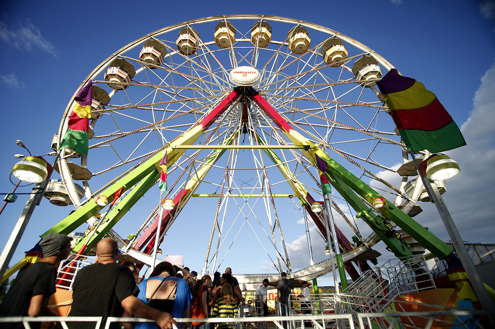
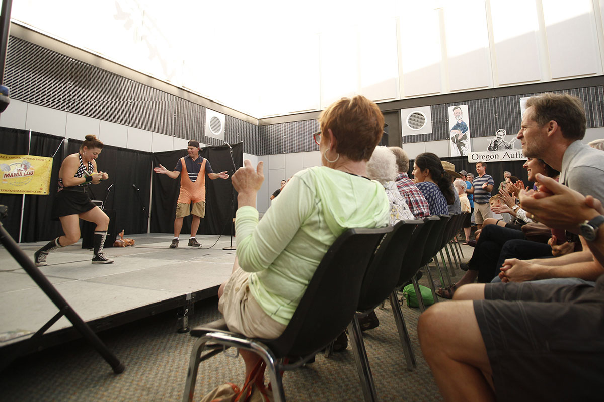
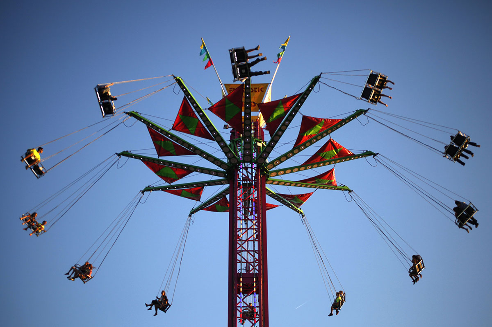
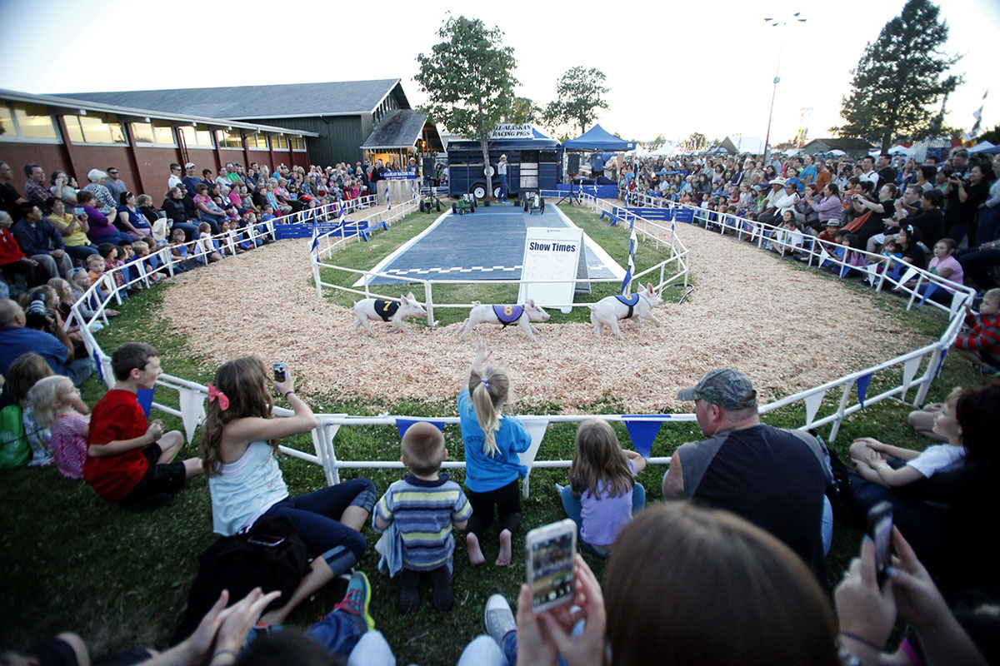

The sights and sounds of the
Lane County Fair
Lane County Fair
July 24, 2014
Listen to the natural ambiance of the fair by clicking the play icon in the top right corner of each photograph. Use headphones for the best experience.

Fair goers wait their turn to ride the Ferris Wheel at the Lane County County Fair.
Kailey Schildmeyer, 12, watches as participants take on the ring toss at the Lane County Fair.
Brianna Mills, 13, left and Logan Gaskill, 14, right, of Eugene go for a ride at the Lane County Fair.
Jackie Riggs, center left, of Trillium Community Health Plans, pays out $14 in bingo winnings to Riley Feigum, 9, center right, as Cindi Feigum, left, and Conner Seely, 13, right, look on. Seely won the previous round, raking in $16.
Sara and Ruby Major of Eugene go for a ride on a children's roller coaster at the Lane County Fair. This was the first time Ruby was big enough to ride the rides Sara said of her four-year-old daughter.

The audience applauds watches as Mama Lou, American Strong Woman, ripped a phone book in half at the Lane County Fair.

Vertigo takes riders high above the Lane County Fair.
Livestock at the Lane County Fair.

Bob, (6), followed by Notorious P.I.G., (8), and Sloppy Joe, (7), round the corner in the All-Alaskan Racing Pigs show at the Lane County Fair.

The Zipper ride at the Lane County Fair winds down amid screams from its riders.
The Lane County Fair just after sundown.